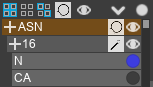
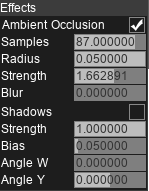

Visualize Bar¶
The visualize bar is divided into a few tabs:
Particles tab
Controls the list of atoms / proteins / meshes.
Colors
Controls the attributes and coloring of atoms.
Graphics
Controls the options of realtime-rendering of the scene.
Render
Controls the options of offline-rendering (image / video output).
Information
Displays the math for the nerds, as well as additional information for selected atoms.
Particles Tab¶
The particles tab controls the drawing of atoms and proteins.
Button |
Function |
|---|---|
|
Expands / Collapses the group |
|
Selects everything |
|
Deselects everything |
|
Flip selection |
|
Changes the draw mode (see |
|
Shows / Hides the group / selection |


Atoms are grouped into Residues -> Residue ID -> atom name.
Todo
Add the protein section
Attributes Tab¶
Attributes¶
Attributes are general data for each particle, optionally animated. A system can have an arbitary number of attributes.
Attributes can be filled with the Set Attribute node, and queried with the Get Attribute node.
Colors¶
The colors section controls the color for atoms and bonds.


Bond colors
Option |
Details |
|---|---|
Custom Bond Colors |
Use a custom color instead of atom colors |
Blend Bond Colors |
Blend colors inherited from atoms |
Radii¶
Option |
Details |
|---|---|
Scale |
Multiply all radii values by this value |
Bounding Box¶
Option |
Details |
|---|---|
Draw |
Draw the Box in 3D view |
Center X, Y, Z |
Box center coordinates |
Periodic |
Wrap around atoms outside the bounding box |
Orientation¶
Type
Type |
Details |
|---|---|
Stretch |
Stretch atoms based on directions |
Vector |
Draw per-atom arrows toward directions |
Graphics Tab¶
The graphics tab controls the shading of the scene.
Shading

Option |
Details |
|---|---|
Classic |
The scene is shaded with Lambert and Blinn-Phong lighting. Slightly faster but lower quality. |
PBR |
The scene is shaded with Environment Maps. Higher quality but slightly slower and uses more memory. |
Lighting

Option |
Details |
|---|---|
Sky |
Environment type (backgrounds are in the backgrounds/ folder) |
Strength |
Strength of diffuse lighting (environment strength) |
Falloff |
How much the light gets weaker when further away from the camera |
Offset |
Falloff distance starts from this distance from the camera |
Specular |
The strength of reflection. For PBR, diffuse intensity = 1 - specular intensity |
Transparency |
Transparency ratio |
IOR |
Index of Refraction for transparency |
Background |
Background type: Color, Ambient, Sky |
Color |
Background color |
Camera

Option |
Details |
|---|---|
Follow |
Camera always centers on target |
Center X,Y,Z |
Camera axis |
Rotation W, Y |
Camera angle |
Scale |
Camera zoom factor |
Quality |
Resolution scaling of the scene |
Use Dynamic Quality |
Use a different resolution scale when moving the camera. Suitable for heavy scenes. |
Quality 2 |
Resolution scaling of the scene when the camera is moving |
Clipping

Option |
Details |
|---|---|
None |
All atoms are shown |
Slice |
Only atoms in the bounding plane + thickness is shown |
Cube |
Only atoms in the bounding volume is shown |
Effects
Additional effects to apply to the scene
List of effects available:
Glow
Option
Details
Threshold
Minimum brightness value
Radius
Blur radius
Strength
Additive strength
Ambient Occlusion
Option
Details
Samples
Number of samples to average
Radius
Radius for sampling
Strength
Darken intensity
Blur
Blur radius before darkening
Depth of Field
Option
Details
Distance
Focal distance from camera
Aperture
Blur amount
Iterations
Number of blur operations. Larger number is slower but reduces artifacts
Render Tab¶
To Image (GLSL)
Produces a high resolution screenshot of the view.

Option |
Details |
|---|---|
Width |
Width of the image (maximum 16k) |
Height |
Height of the image (maximum 16k) |
Slices |
Render in parts, improves render speed when the image resolution is very large |
MSAA |
Averages the final image over 4 samples. Slower but more beautiful. |
To Video (GLSL)
Produces a high resolution screenshot video of the animation playback.
Option |
Details |
|---|---|
Format |
Video format (GIF / AVI / PNG sequence) |
Width |
Width of the video (maximum 16k) |
Height |
Height of the video (maximum 16k) |
Slices |
Render in parts, improves render speed when the video resolution is very large |
MSAA |
Averages the final image over 4 samples. Slower but more beautiful. |
Max Frames |
Maximum frames to render. Snapshots will be skipped if there are too many frames. |